南天洞/Nam Thean Tong
イポーに数多く存在する洞窟寺院のひとつ、
南天洞。
位置関係を整理しておくと↓先ほどの霊仙岩の観音サマの壁の裏側にある。
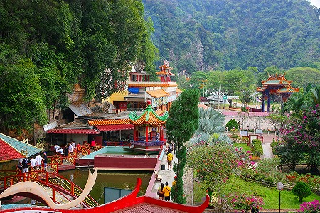
とはいえ別の寺なので壁を越えてショートカットできるわけではなく一旦霊仙岩を出て、改めて南天洞の山門から入りなおす。
で、先ほど霊仙岩からみえた池がコレ。
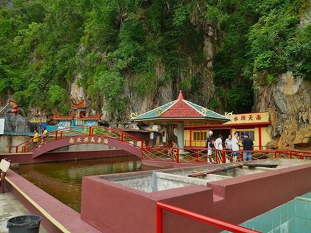
魚の養殖場みたいな四角い池だ。
それでもカクカクした九曲橋や太鼓橋、水上の東屋などといった中国庭園における池のスペックは一通り備えている。
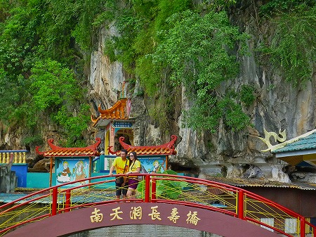
たいていこの手の池って気が狂うほど大量の魚がいたり、亀の上に亀が乗っていたりするのだが、ここの池はそういう感じではなかった。
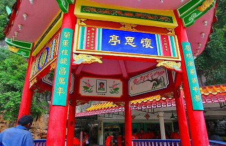
南天洞水上観音サマ。
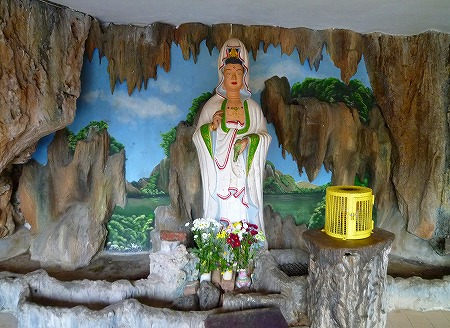
で、水上で涼を取った後は洞窟である。
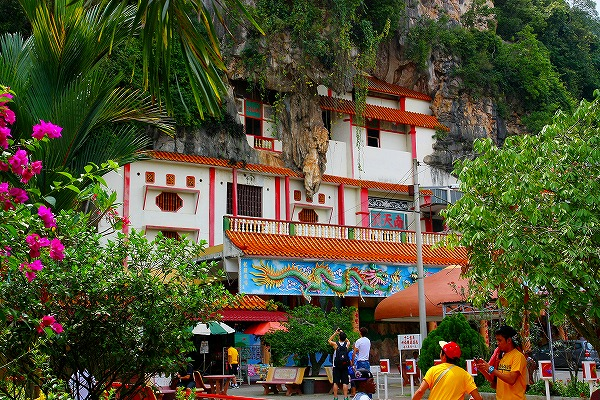
岩壁を覆うように建っている。
この奥に鍾乳洞があり、そこが聖域となっているのは先ほどの霊仙岩と同じパターンだ。
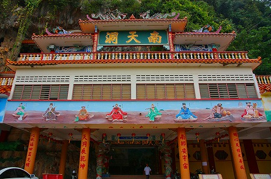
龍の巻きつく柱がいかにも華人の寺、といった風情だねえ。
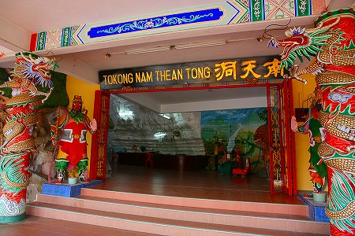
門番もカラフル。
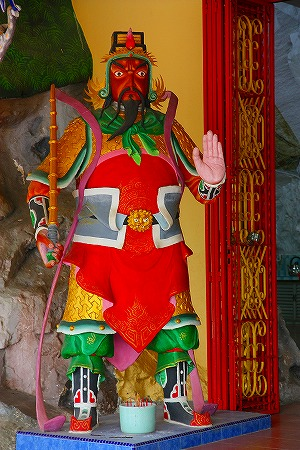
中に入ると最初に目に飛び込んでくるのがこのお方。
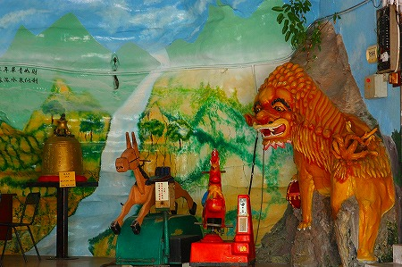
赤い鳥のライドはともかく手作り感満点な馬の遊具に目が釘付け。
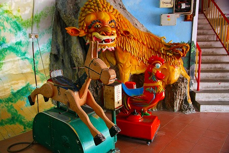
コインの投入口があるが…動くのか、コレ？
ここがネパールやチベットならともかく、一応自動車やパソコンまで作れる工業国の光景とはにわかには信じがたい素敵な遊具だ。
そんなこんなで洞窟である。
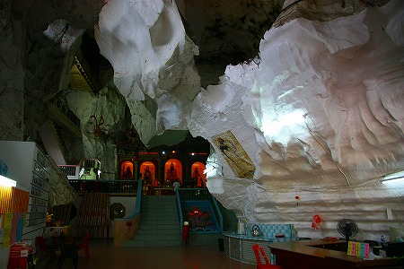
先ほどの霊仙岩よりもはるかに広大だ。
真っ白な岩壁の鍾乳洞なので雰囲気は意外と明るい。
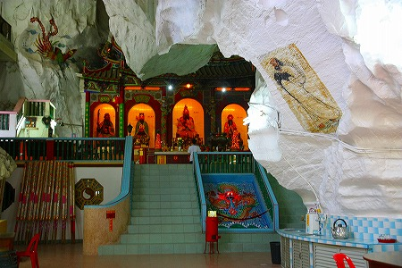
このような堂々とした巨大洞窟寺院は日本ではまずお目にかかれない。
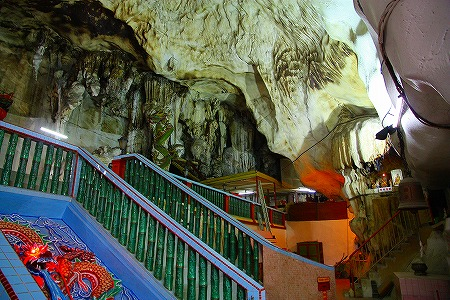
中央には道教のカミサマが鎮座していた。
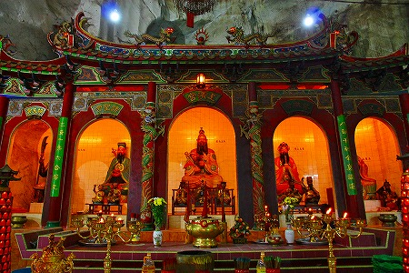
そのカミサマ達を飲み込むかのような圧倒的な鍾乳洞の岩肌。
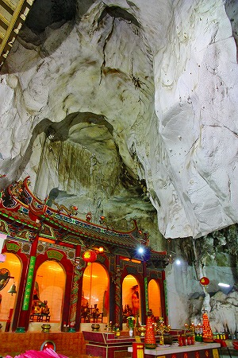
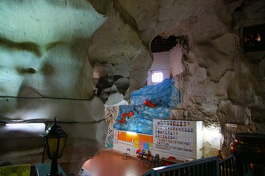
上らなかったが、こんな階段とかワクワクするねえ。
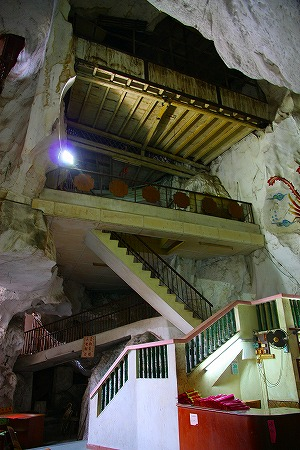
↓中央やや左に龍のレリーフがあるのがお判りいただけるだろうか。
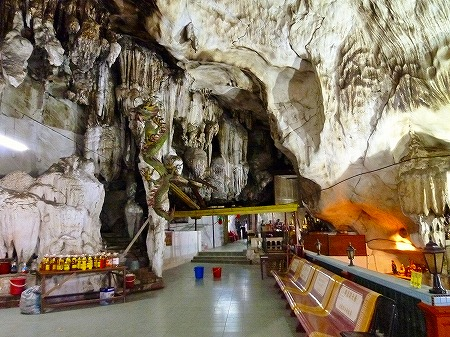
鍾乳石の柱にコンクリで龍をくっつけちゃってるのだ。
まるでバロック建築のような鍾乳石の柱に張り付く超ポンチなコンクリの龍。
その思いっきりの良さ、素晴らしいぞ。
日本人である私からすれば鍾乳洞といえば天然記念物なんでしょ、保存とか保全とかするんでしょ、と思いがちだが床はタイル張り、壁には神仏のイラスト、挙句の果てにコンクリ龍、である。
まあ、天然記念物などという発想が生まれるはるか前からお寺なんだから問題ないんだろうけど、個人的には「イイのかな〜」と思ってしまいますね。
逆に言えば何故日本にはこの規模の鍾乳洞が霊場にならなかったのだろうか？不思議といえば不思議だ。
先ほど入ってきた場所とは逆サイドにも出口がある。
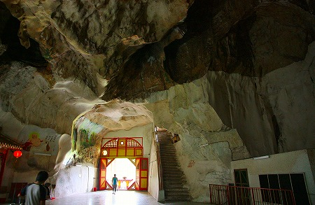
外を見れば目の前にはヒンズー寺院があった。
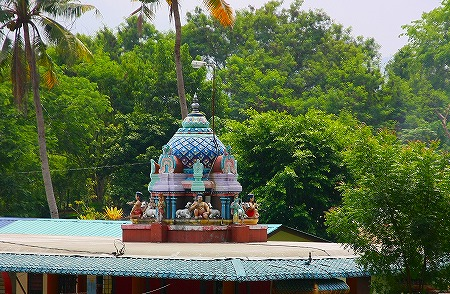
外から見るとこんな。
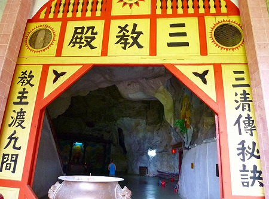
洞窟内には写真が並んでいた。
恐らく高額ドネーションをした人達なのだろう。
そのほか洞内や境内にいた素敵な仲間たち。
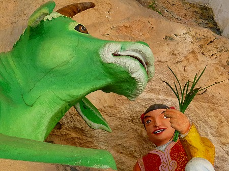
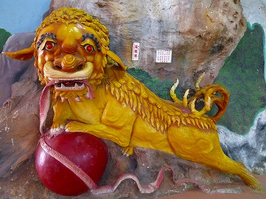
軒下の魚は最早レリーフですらなく、立体のコンクリ像を後付けしてました。
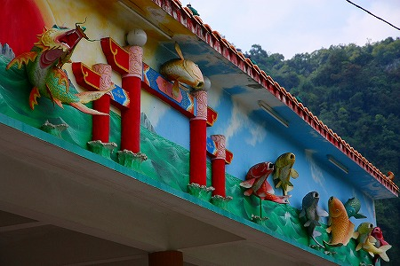
特にこの魚が恐かったです…。
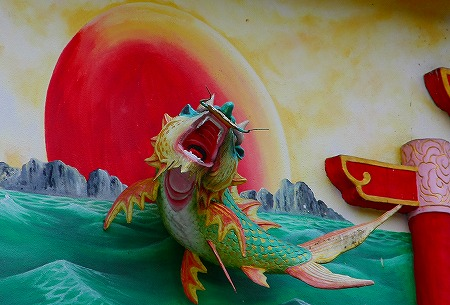
お寺を後にしようと思ったら他の参拝客がみな上を見上げて指を指している。
何だろうと思って一人に聞いてみると岩壁に仏様がいらっしゃる、というではないか。
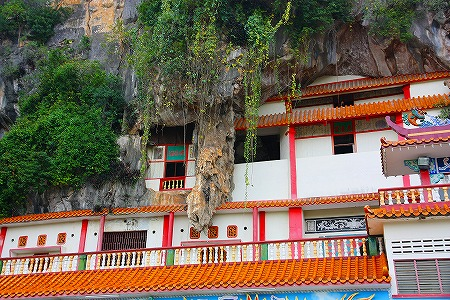
↑画面左上に注目。
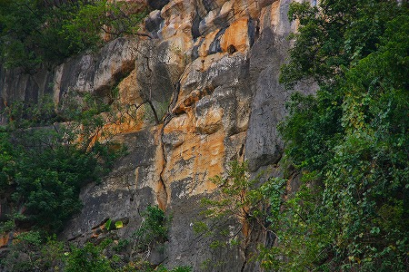
ああ〜、な〜るほどねー。
次も洞窟です
馬来西亜珍寺大行進
珍寺大道場 HOME